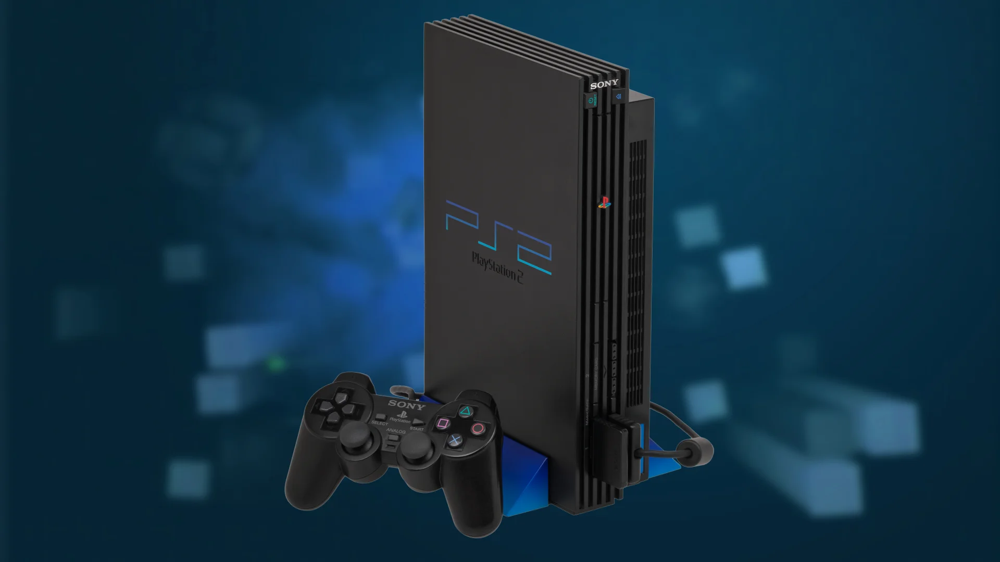
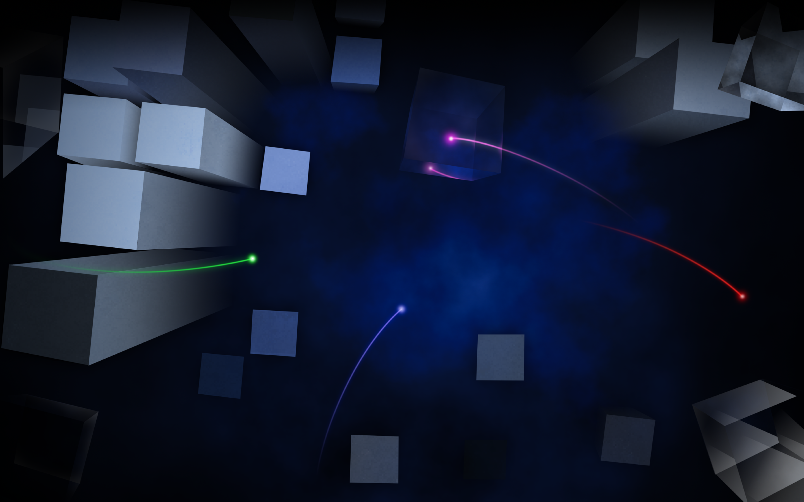

I never had a PS2 of my own. But the woman who ran the daycare I went to lived just up the street, and her son was genuinely awesome — kind of an older-brother figure for me, which meant a lot as an only child. The only times I played PS2 as a kid were with him.
The PS2 had such an awesome library of games, and in my opinion one of the best boot-up animations ever put on a console. It felt so futuristic for the time — you could honestly argue the UI still feels futuristic today. And a modded PS2 with four controllers is an absolutely amazing setup in 2026. You can digitally load an entire library onto the console. Don't get me wrong, I love physical games and you can still use those — but the disc drives on these older machines just aren't holding up well 20 years later.

The disc drive has been the single most common point of failure across my Gamecubes, PS1, Dreamcast, and Wii. For the GameCube specifically, my nostalgia is just too strong: I need the physical games and a working disc laser, because I love those tiny GameCube discs and the box art too much to go any other way. Same goes for my Game Boy, Game Boy Color, and Game Boy Advance Pokémon games. (The only game I feel I'm still missing for the GameCube right now is Kirby Air Ride.)
But back to the PS2. I recently sold mine to a friend, simply because I wasn't playing it enough at the moment. I'll get another eventually — a modded PS2 slim. The white one looks killer, but I'll always reach for the black.
The one thing that still trips me up about PlayStation is the buttons. I love that Sony didn't just go with the conventional ABXY layout — but my brain never quite learned to read △ ◯ ✕ ▢ on sight. I still fumble with a PlayStation controller, honestly — but I really do love using the PS5 controller with my Linux and Mac machines.
The PS2 is an absolutely incredible, legendary console, and the sales back that up. With roughly 160 million units sold, it's still the best-selling video game console of all time — and it wasn't close among its own generation. The GameCube sold around 21.7 million, the original Xbox around 24 million, and the Sega Dreamcast under 10 million. The PS2 didn't just win its era; it lapped it. A big part of that was how much console you got for the money: a massive game catalog, a built-in DVD player when those were still expensive on their own, and backward compatibility with PS1 games.
It has also aged remarkably well. Plenty of consoles from that time feel like relics now, but the PS2's library, its interface, and the thriving modding scene around it mean it's still genuinely fun to own and play. I'm not as deep on the PlayStation lineup as I am on the Nintendo side, but I know for a fact the PS2 and the PS4 were — and still are — absolutely fire.
If you want to see an expert console modder in action, check out ModzvilleUSA on YouTube. Lots of great content there.